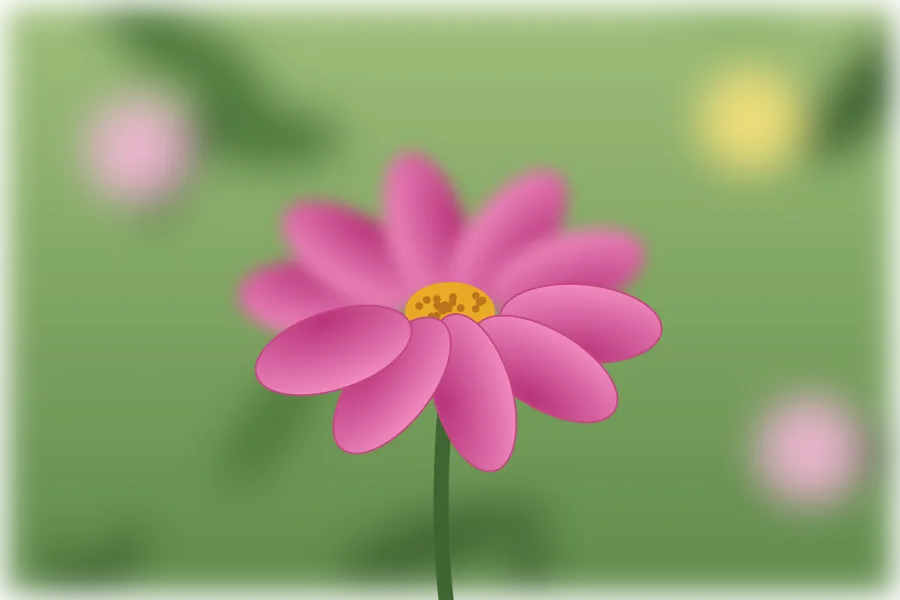
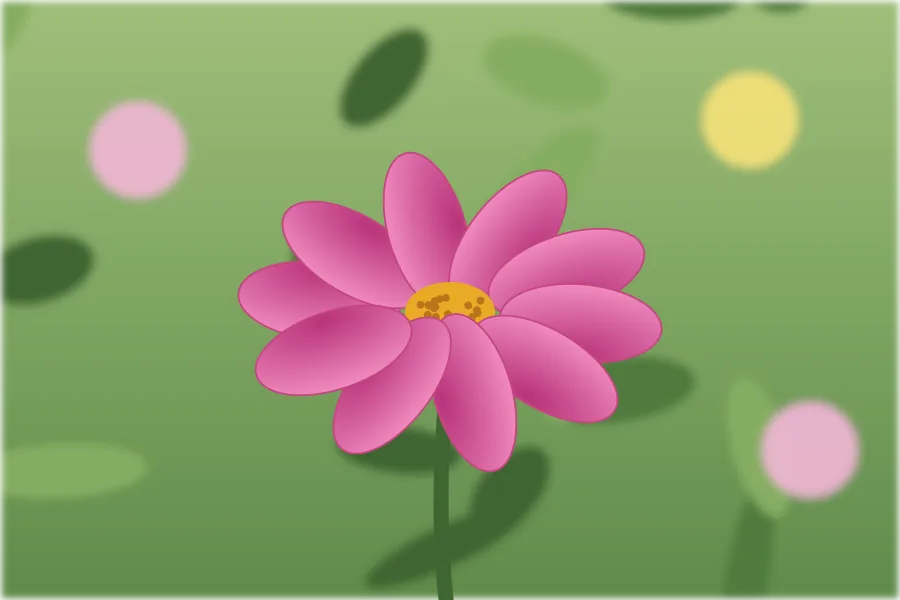
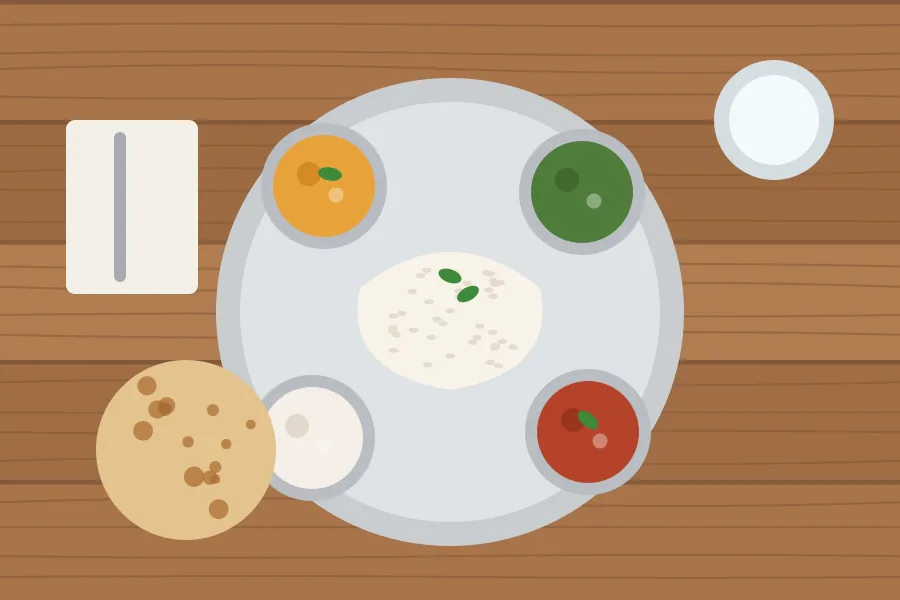
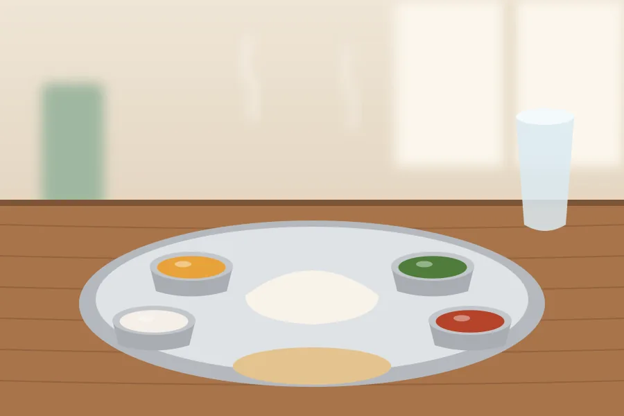

Get close and a whole new world opens up. The veins of a leaf, a drop of water on a petal, the crust of fresh bread, the scales on a moth’s wing. Close-up photography needs no travel at all, which makes it perfect for grey weekends. Food is close-up photography with a deadline, and it’s where the club’s From the Dining Table series lives.
Getting close
Every lens has a closest focusing distance, often printed on the barrel. Get nearer and it can’t focus any more. A macro lens is built to focus very close, usually close enough to show a small subject at life size on the sensor. Without one, a screw-on close-up lens or a set of extension tubes gets you much of the way for little money. Many phones switch to a macro mode by themselves when you move in close.
Depth of field up close


Depth of field shrinks dramatically as you get closer. At a few centimetres it can be thinner than a millimetre. So stop down to around f/8 or f/11 and focus with care on the part that matters most, the eye of an insect or the front edge of a cake. Past f/16, diffraction starts to soften everything slightly (chapter 14).
Try to line up the camera with the subject, so the important parts sit on one flat plane at the same distance. Keep the camera parallel to a flat flower rather than tilted. For more depth than any aperture can give, focus stacking blends several shots taken at different focus distances. Some cameras do it automatically.
At these distances the smallest movement throws the focus off. Use a tripod if you can, or brace your elbows. Instead of turning the focus ring, set it once and rock slowly forwards and backwards, taking pictures as the sharp zone passes through the subject. Outdoors, wait for the wind to drop, or shield the flower with your body or a card.
Food on the table


Choose the angle to suit the dish. Flat food like a thali or a bowl of soup looks best from straight above. Most plates work from about 45°, the view of someone sitting at the table. Tall food like a layered cake or a drink wants to be seen from the side, at plate level.
Light matters more than any styling. Put the table next to a window and let the light come from the side or from slightly behind (chapter 5). It brings out texture and makes sauces shine. Switch off the ceiling lights, because their warmer colour mixes badly with daylight (chapter 4). A white card on the shadow side lifts the dark parts. Wipe the rims of the plates and keep props to a few. A human touch helps, like a hand reaching in or a few crumbs. Then be quick. Food looks its best for a few minutes, and the people at the table want to eat.
Exercises
Exercises K1–K4. Tick each one off when you’ve tried it. Your ticks stay on this phone or computer.
- K1
Closest focus
Find out how close your lens or phone can focus. Fill the frame with a leaf or a coin.
- K2
Aperture ladder
Photograph a flower from the same spot at f/2.8, f/5.6, f/11 and f/16. Compare how much is sharp and how the background changes.
- K3
Angles
Photograph one meal from above, from 45°, from the side and close in on a single detail. Decide which angle suits the dish.
- K4
Window light
Put a plate by a window and photograph it with the light from the side, from behind and from the front. Then add a white card on the shadow side for one more version.
Photography Handbook, © 2026 Samskara Photo Club. Text and illustrations are licensed under CC BY-NC-SA 4.0. You may share and adapt them for non-commercial use if you credit the club and share your version under the same licence. Commercial use needs the club’s permission. The club logo is not covered by the licence.